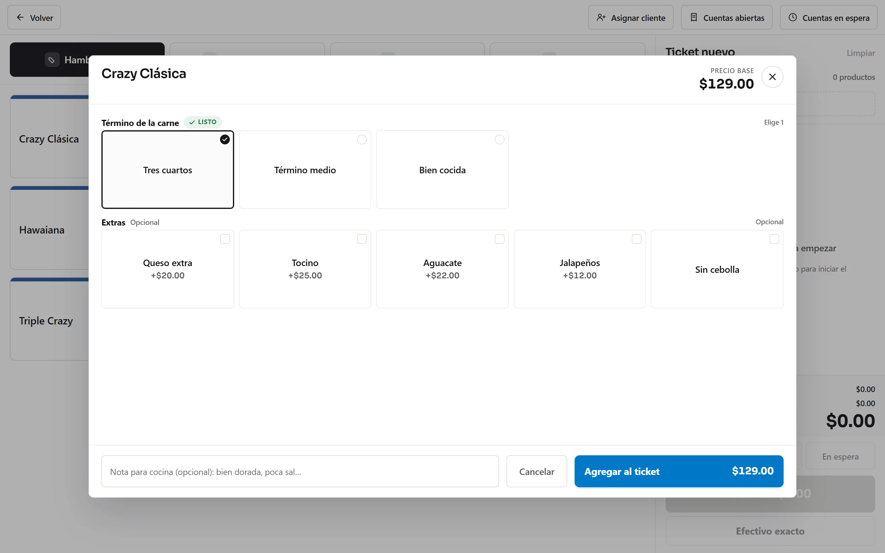
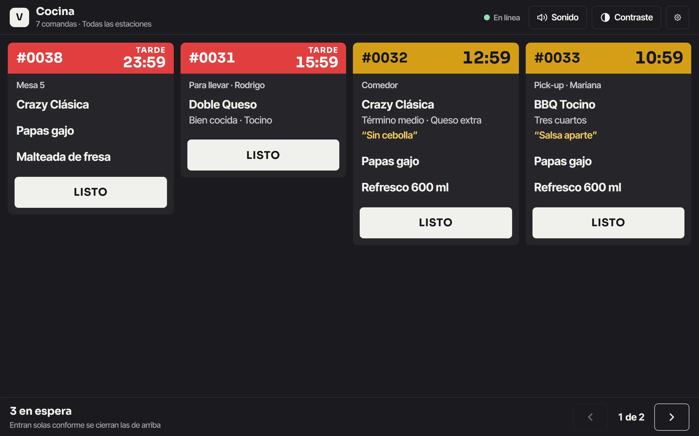
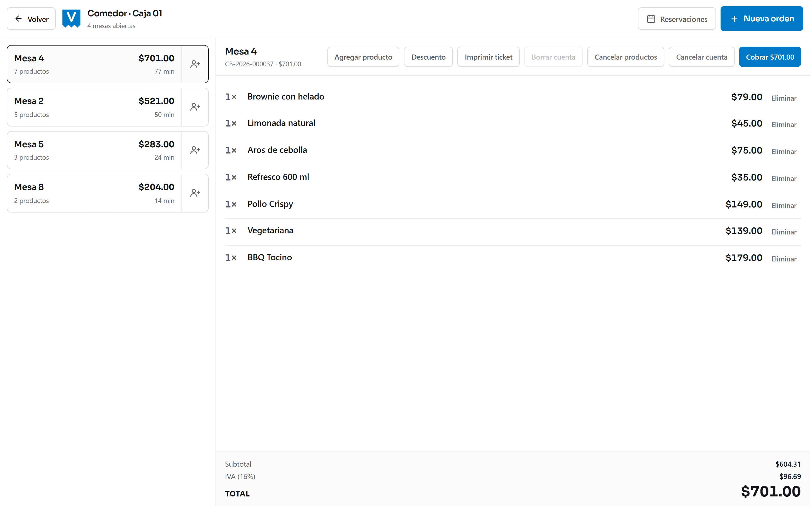
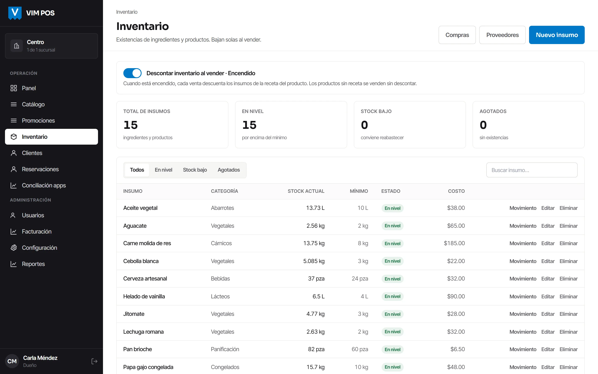
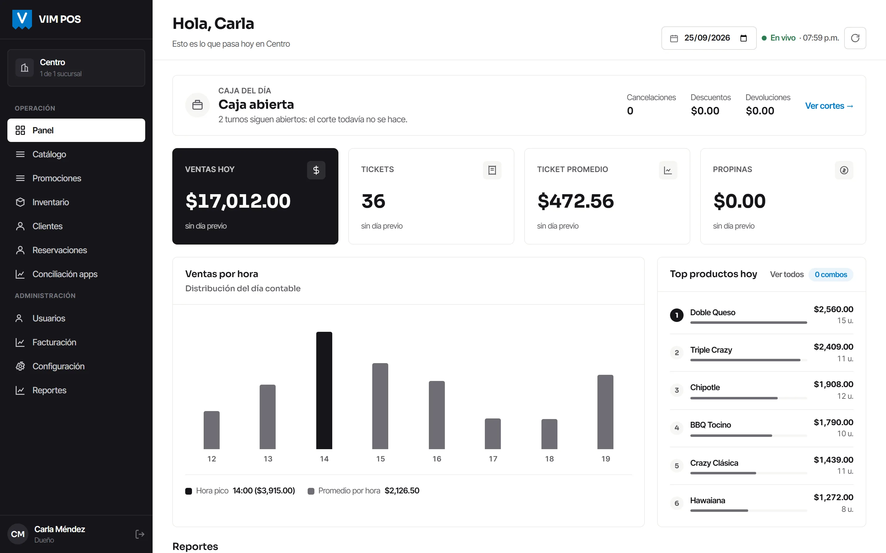
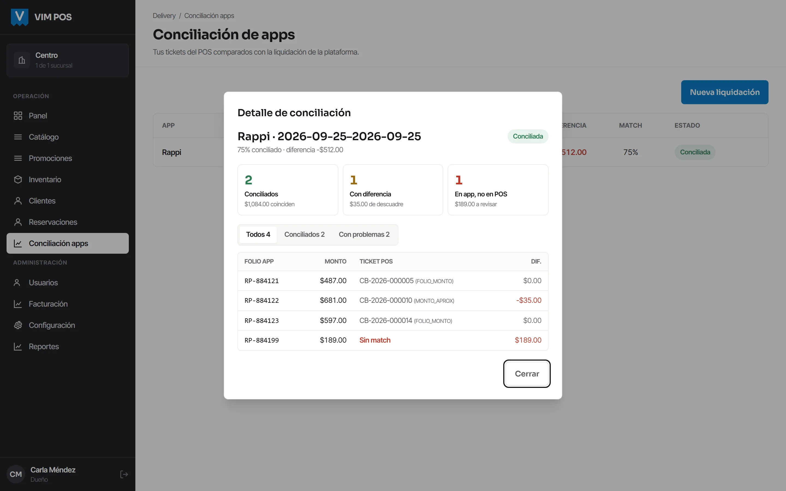
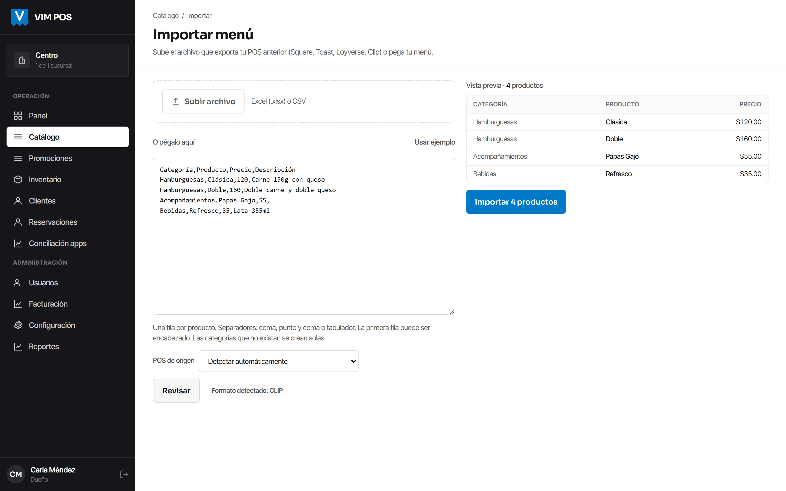

Funciones
Qué hace, sección por sección
Todo lo que ves aquí son capturas del sistema funcionando, no dibujos. Y si algo todavía no está, lo dice.
La caja
Cobrar rápido y sin equivocarse
Es la pantalla donde tu cajero pasa el turno entero. Empieza eligiendo cómo se va el pedido —comedor, para llevar, pick-up o domicilio— porque de eso dependen el ticket, la comanda y el reporte.

Modificadores que obligan
Si una hamburguesa necesita término, no se manda a cocina sin él. El error se evita antes de llegar a la plancha, no después.
Notas donde toca
Una nota para la cocina va en la comanda; una nota de la orden va en el ticket. Son campos distintos porque son lecturas distintas.
Descuentos con motivo
Quedan registrados y salen en el reporte de descuentos del panel, para que se puedan revisar al cierre en vez de descubrirlos al cuadrar.
Pedidos en espera
El cliente se lo piensa y no bloquea la caja: el pedido se aparta y se retoma después sin volver a capturarlo.
Las formas de pago de verdad
Efectivo, débito, crédito, transferencia, vales y las apps de reparto. La tarjeta se registra para que el corte cuadre; el cobro va por tu terminal de siempre.
Se puede dividir
Una parte en efectivo y otra con tarjeta en el mismo ticket, sin tener que inventar dos ventas para que cuadre.
La cocina
La comanda llega sola, y a la estación correcta
Cada producto sabe de qué estación sale. Las bebidas se imprimen en la barra y la comida en cocina, en lugar de un papel largo que hay que leer entero para encontrar lo tuyo.

Pantalla o papel
Lo que le funcione a tu cocina, y no es una decisión de por vida: se cambia en la configuración cuando quieras.
Por estación
La categoría decide a dónde va cada cosa por omisión, y un producto puede llevar la contraria cuando es la excepción.
Sin pasar por internet
La comanda viaja de la caja a la cocina por la red de tu local. No sale afuera ni siquiera cuando hay señal.
Comedor
Mesas, con la cuenta abierta
Para el restaurante con meseros: el mapa del comedor, la cuenta que crece mientras la mesa sigue ahí, y el pedido que sale a cocina cuando se toma y no cuando se paga.

A cocina antes de cobrar
El pedido de la mesa sale en cuanto se toma. Es como funciona un comedor de verdad, y es donde fallan los sistemas pensados para mostrador.
Quién atendió
El ticket guarda su mesero, y de ahí salen el reporte de ventas por mesero y el de propinas del turno.
Tiempos de cocina
Cuánto tardó cada comanda desde que entró hasta que salió, en su propio reporte. Sirve para discutir con datos en vez de con impresiones.
Inventario
Cuánto insumo se fue de verdad
Cada producto tiene su receta, así que al vender una hamburguesa bajan la carne, el pan y el queso. Lo que no cuadra al contar es merma — y ahí es donde se ve el dinero que se va sin que nadie lo apunte. Va incluido desde el plan Negocio.

Receta por producto
Y también por modificador: si el queso extra se cobra, el queso extra también se descuenta.
Mermas aparte
Con su motivo y separadas de las ventas. Una cosa es lo que vendiste y otra lo que se te echó a perder.
Avisos de existencia baja
Antes de quedarte sin algo en plena hora pico, no cuando ya te quedaste.
Reportes y corte
El corte que ya conoces, y catorce reportes más
El corte Z está calcado del formato que tu equipo ya lee cada noche, a propósito: quien lo revisa no tiene que reaprender dónde mirar. Y el panel suma catorce reportes para cuando quieras entender algo concreto.


Arqueo con sobrante y faltante
Cuentas el cajón, el sistema dice lo que debería haber, y la diferencia queda registrada junto con quién cerró el turno.
Catorce reportes
Por producto, categoría, mesero, área, marca, tipo de servicio, tiempos de cocina, descuentos, reimpresiones, no-shows y el histórico de cortes.
Estado de resultados del día
Ventas, IVA, descuentos, devoluciones y comisiones de apps en una sola pantalla, por sucursal y por día.
Apps de reparto
Revisa lo que la app te depositó
Rappi, DiDi y Uber Eats te mandan un reporte de liquidación. Pegas ese reporte aquí y el sistema lo cruza pedido por pedido contra lo que vendiste, y te marca aquéllos en los que el depósito no coincide.

Cruce por folio y monto
Y sin doble asignación: un ticket no se puede casar con dos renglones distintos del reporte.
Lo que falta, a la vista
Pedidos sin depósito, depósitos sin pedido y diferencias de monto, cada grupo por separado.
La comisión, en el reporte
Entra en el estado de resultados del día, así que la venta por apps se ve neta y no bruta.
Si ya usas otro
Tu menú se pega y ya
Descargas el menú del sistema que usas hoy y lo pegas aquí tal cual. No hay que recapturar trescientos productos a mano ni pagar por la mudanza.

Facturación
Muy prontoTus clientes se facturan solos, desde el ticket
El comensal escanea el código del ticket, pone sus datos y recibe su factura por correo. Va incluida desde el plan Negocio. Está construida y probada; estamos cerrando la activación con el proveedor autorizado, así que todavía no la encendemos.
Míralo funcionando
Media hora con tus productos y tus precios cargados. Sin presentación y sin compromiso.